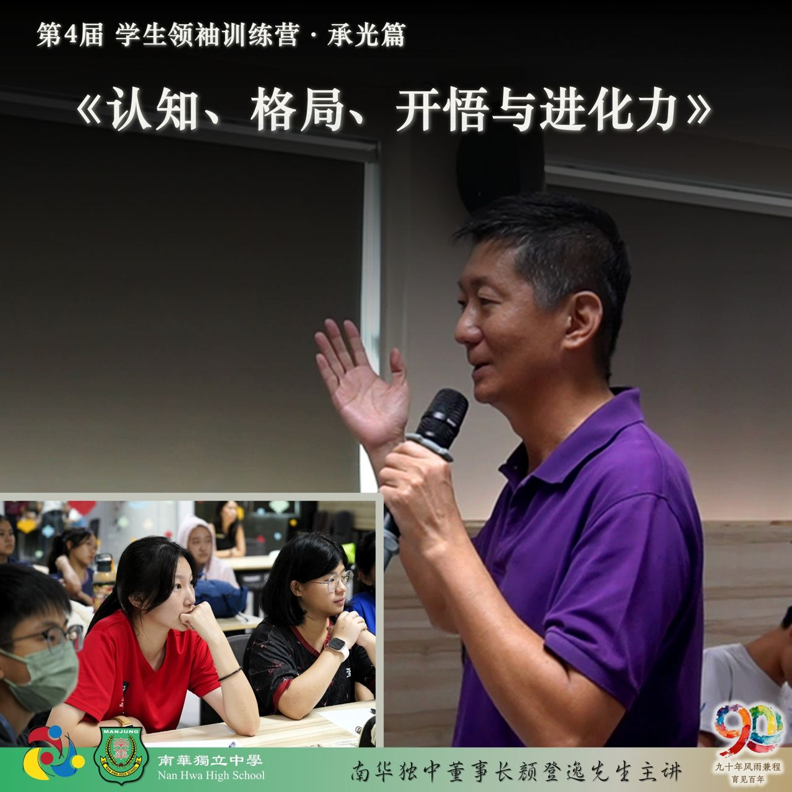
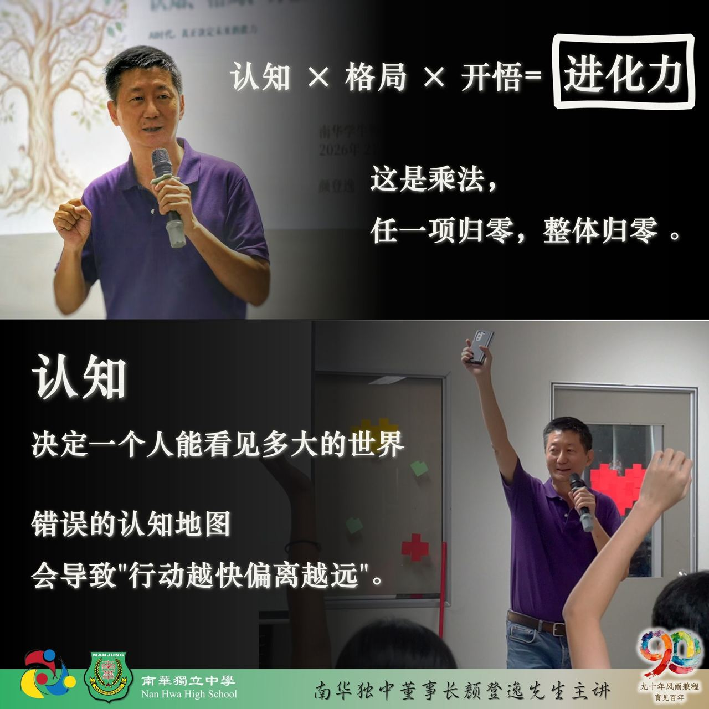
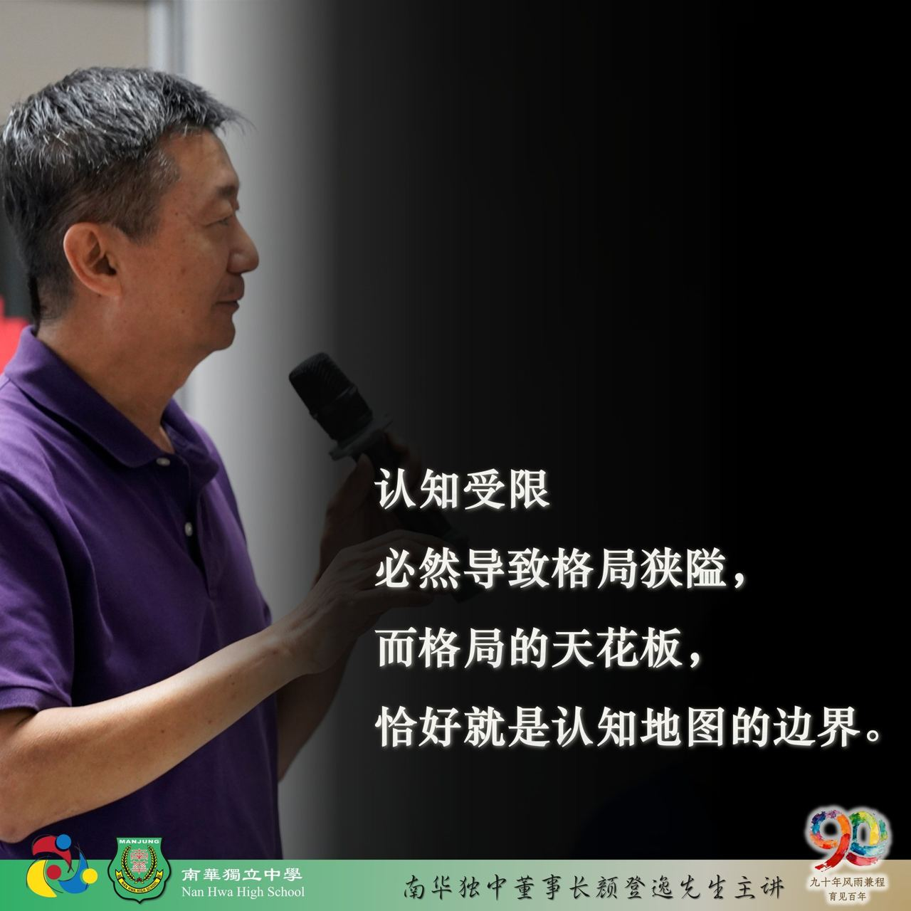
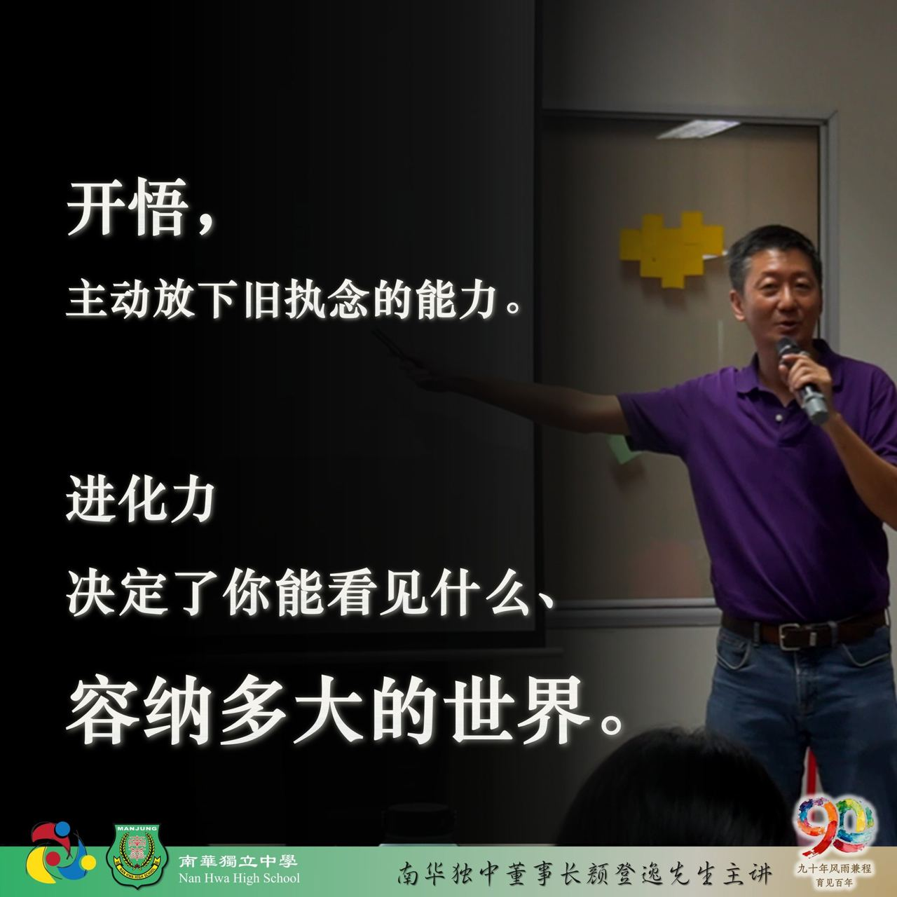

南华独中 2026年 第四届 学生领袖训练营(承光篇)
南华独中 2026年 第四届 学生领袖训练营(承光篇)
专题讲座系列报导之一
认知、格局、开悟与进化力
每年南华独中学生领袖训练营都会有一场由董事长颜登逸先生亲临主讲，主题范围正是“领袖素养 ”，而今年则以《AI时代：决定未来的进化力》为题，为参营学生系统阐述一套足以穿越时代的竞争力底层框架——进化力三元模型：认知、格局与开悟，三者相乘，缺一则系统崩塌。
颜董事长开宗明义，以生物进化类比切入："未来被淘汰的不是成绩最差的人，而是停止进化的人。病毒与细菌之所以无法被彻底消灭 ，正因其遭遇抗体后能即时突变、适应环境。人也必须如此。"他援引人类文明演进周期的加速规律：农业时代延续十万年，工业时代历经两百五十年，信息时代缩短至五十至七十年，而生成式AI自2017年建立技术框架，至2022年底全面爆发，不足四年已规模化替代人类工作，这些不是危言，是已然发生的现实。
论及进化力的核心，颜董事长以一道乘法公式呈现：
进化力 = 认知 × 格局 × 开悟。
并强调，这是乘法，任一项归零，整体归零 。认知决定一个人能看见多大的世界，格局决定其能容纳多少维度的矛盾，开悟则决定其愿意以多大的意愿修正自身。
在认知维度，颜董事长指出，感官所见并非绝对真实， 真正的高认知不是记住更多表层现象，而是向下追问本质——找到驱动事物运作的底层规律，方能以最小阻力撬动最大改变。上述理论虽然抽象，颜董事长以自身摄影经验作跨界印证：摄影的本质不是掌握光圈快门，而是"讲好一个故事"，虚化背景、冷暖碰撞，所有技术都服从于这一底层目的。
当学生仍在背记技术参数时，洞见本质者已在构思叙事。
接着要谈的是格局的突破，颜董事长以交通拥堵为例，道出升维思考的核心：在同一维度扩建道路只会引诱更多车辆，真正的解法必须跃升至更高维度的公共交通统筹与城市规划重塑。"高格局者不在原地内耗，而是容纳矛盾，设计系统。"他直言，认知受限必然导致格局狭隘，而格局的天花板，恰好就是认知地图的边界。说到这里，董事长出了一道“不提升维度就解决不了的谜题”给在场的全体营员，有人眉头深锁，有人交头接耳，却总是有几位手拿把掐瞬间就完美解题的好苗子，解答成功以后便开心不了几秒，就弄明白这游戏的深意，于是眉头也锁了起来。
留给营员解密的时间并不多，紧接就是第三层开悟，被颜董事长定义为"主动放下旧执念的能力"，而非单纯获取新答案。他指出，多数人在认知受到挑战时，会启动自我保护机制，将"我的观点被推翻"误读为"我这个人被否定"。高悟性者的核心能力，正是区分"我"与"我的观点"：观点可以被推翻，我依然完整。他坦率点破，霸凌等恶劣行为的心理本质，往往是以攻击掩盖内在脆弱的低级防御——其背后，恰恰是开悟层级停滞的表现。
至此进化力三元模型：认知、格局与开悟终于传授完毕。
结束前，颜董事长不忘提点：进化力决定了你能看见什么、容纳多大的世界。所以要把进化当成习惯，把好奇当成态度，把更新当成使命。
只有持续进化的你，才是永远不会被淘汰的那一位。



